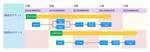
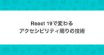

SmartHR Tech Blog
https://tech.smarthr.jp/
SmartHR 開発者ブログ
フィード

フルリモエンジニアのデスク環境!!劇的ビフォーアフター 60
60
SmartHR Tech Blog
ネタバレ防止のため写真なしアイキャッチにしました こんにちは、SmartHRの@nansekiです。 意外と知られていないのですが、SmartHRのプロダクトサイドはフルリモートOKで、多くの社員が自宅で仕事をしています。フルリモート勤務を支える制度*1には以下のようなものがあります。 リモートワーク環境を整える手当 入社時に25,000円支給 リモートワーク手当 毎月5,000円支給 フルリモート通勤制度 遠方居住者が所属オフィスに出社する交通費は、月2回まで通勤手当ではなく経費精算OK（金額上限なし） 今回はそんなフルリモートで働くエンジニアのデスク環境に迫ります。 コロナ禍で強制的にリモ…
4日前

「フルリモエンジニア Meetup in 関西 〜フルリモートで働いてる人・働きたい人、全員集合〜」を開催しました！ 1
SmartHR Tech Blog
こんにちは、SmartHRの@nansekiです。 この記事は、6月21日に開催した「フルリモエンジニア Meetup in 関西 〜フルリモートで働いてる人・働きたい人、全員集合〜」のレポートです。この記事には技術的な内容は含まれませんのでご了承ください。 smarthr.connpass.com 開催背景 当日の様子 LT 懇親会 アンケートでいただいたコメント 感想と意気込みとおねがい 最後に 開催背景 SmartHRはエンジニアを含むプロダクトサイドの社員はフルリモートワークOKです。 しかしこれまで、オフラインイベントのほとんどを東京で開催してきました。社員が一番集中しているからとか…
5日前

キーボードへのこだわりを聞いてみた ── 人生の1/3の時間は打鍵！ 40
SmartHR Tech Blog
こんにちは、プロダクトエンジニアの@ksaitoと@tafuです。 SmartHRには共通の趣味の方が集まるSlackチャンネルが数多く存在し、その一つに「#趣味_キーボード」チャンネルがあります。そこでは、新しいキーボードの情報共有や自作しました〜などのコミュニケーションが取られています。 今回は、仕事道具であるキーボードについて、こだわりのポイントや満足していない部分など、プロダクトエンジニアの@asonasさんにインタビューしてきました。 と、その前に我々のキーボードを軽く紹介させてください。 ksaitoのキーボード ksaitoが普段使っているキーボード TOFU60 を使っています…
5日前

スプリントプランニングの未来予測： 予言の書 61
SmartHR Tech Blog
こんにちは! SmartHR プロダクトエンジニアの @sakata と @hypermkt です。 SmartHRではほぼすべてのチームでスクラム開発を行っています。スプリントプランニングとスプリント進行中における課題に対し、私たちのチームでは「予言の書」という取り込みを行っています。本記事では、この「予言の書」の概要とその効果についてご紹介します。 予言の書が必要な背景 スクラム開発で、チームが消化できるキャパシティからタスクを選定したにも関わらず、すべてのタスクの消化ができなかったという経験はありませんか？ 私たちはたくさん経験したことがあります。そこにはスプリントプランニングにおける計…
11日前

React 19 で変わるアクセシビリティ周りの技術 93
SmartHR Tech Blog
こんにちは。アクセシビリティ本部のアクセシビリティエンジニアの五十嵐です。SmartHRでは主にアクセシビリティテスターが見つけた課題を技術的な観点から改善したり、根本的な問題を解決するための仕組みづくりを担当しています。 さて、Meta が開発する UI ライブラリとして長い間人気を博している React ですが、2024年4月に最新版であるバージョン 19 のRC版が公開されており、注目を集めています。 バージョン 19 では "use client" や "use server" でも知られる Server Components を含む様々な機能が含まれる予定ですが、この記事では、そんな…
12日前
キャリア台帳のE2EテストでPlaywrightを利用している話 2
SmartHR Tech Blog
こんにちは、SmartHRでキャリア台帳の開発を担当しているプロダクトエンジニアのhosoyaです。 今日は、私たちがどのようにPlaywrightを使ってキャリア台帳のE2Eテストを実装しているかについてお話しします。 なぜPlaywright？ E2Eの導入・運用の検討を始めた当時、SmartHRで運用されているE2Eは、Rspec x Selenium x Capybaraが主流でした。 キャリア台帳は新規プロダクトという事もあり、新しいツールの選定をしてもよいのではないかということでチーム内での検討がはじまりました。 採用理由に関しては以前紹介された「E2Eテストを Playwrigh…
14日前

SmartHRのRubyKaigi 2024の舞台裏
SmartHR Tech Blog
こんにちは、DevRelのinaoです。 RubyKaigiの会期中は、着替えのTシャツを1枚しか持って行ってなかった、名刺入れをポケットに入れたまま洗濯して名刺が四散した、熱々の沖縄そばを自分にぶっかけたなど、衣服まわりのトラブルに見舞われ続けました。どれも、原因が自分にしかないことがかなしいです。 この記事では、SmartHRがRubyKaigi 2024で行ったことの舞台裏をまとめます。 RubyKaigi 2024の会場となった那覇文化芸術劇場なはーと テーマ：「沖縄で握手！」 行った施策 体制 初参加者の方にも楽しんでいただきたい！ 実際の参加者層はどうだった？ 名札でつながる ──…
15日前
たのしいRubyKaigi ── 初参加なのにこんなことした！
SmartHR Tech Blog
こんにちは！SmartHRで基本機能を開発しているプロダクトエンジニアのeminemです。 先日、Rubyist6年目にして初めて念願のRubyKaigiに参加してきました！また、SmartHR社内の運営スタッフにも挑戦しました。 たくさんの貴重な、そして最高に楽しい経験をさせていただいたので、感じたことをざっくばらんにお話できればと思います。 RubyKaigi参加への想い RubyKaigiのことは数年前から風の噂で知っていました。 参加した方に話を聞くと、誰もが口を揃えて楽しかったと言っていて、ずっと羨ましいな〜と思っていました。 しかもなんと今年は沖縄！！！ということで、沖縄も行ったこ…
18日前
「RubyKaigi 2024事後勉強会 ── 思い出が止まらない」を開催しました
SmartHR Tech Blog
こんにちは！ SmartHR基本機能を開発しているプロダクトエンジニアのpndcatです。 RubyKaigiオーガナイザーや、SmartHRのRubyKaigi運営スタッフもしていました。 今回は「RubyKaigi 2024事後勉強会 ── 思い出が止まらない」を開催したので、その様子をお届けします。 事後勉強会のアイキャッチ また、「RubyKaigi 2024事前勉強会 ── 初参加でもこれで安心！」は以下の記事で紹介しておりますので、ぜひこちらも読んでいただけると嬉しいです。 tech.smarthr.jp 開催概要 5月31日にSmartHRで「RubyKaigi 2024事後勉強…
18日前
「RubyKaigi 2024事前勉強会 ── 初参加でもこれで安心！」を開催しました
SmartHR Tech Blog
こんにちは！ SmartHR基本機能を開発しているプロダクトエンジニアのpndcatです。 RubyKaigiオーガナイザーや、SmartHRのRubyKaigi運営スタッフもしていました。 今回は「RubyKaigi 2024事前勉強会 ── 初参加でもこれで安心！」を開催したので、その様子をお届けします。 事前勉強会のアイキャッチ また、「RubyKaigi 2024事後勉強会 ── 思い出が止まらない」は以下の記事で紹介しておりますので、ぜひこちらも読んでいただけると嬉しいです。 tech.smarthr.jp 開催概要 4月25日にSmartHRで「RubyKaigi 2024事前勉強…
18日前
RubyKaigi 2024参加レポート
SmartHR Tech Blog
こんにちは、SmartHRプロダクトエンジニアの@marietty、@neko、@mktakuya、@yorimitsuです。 SmartHRでは、那覇文化芸術劇場 なはーとで開催されたRubyKaigi 2024に約40名で現地参加しました。 Scheduler & Drinkup Sponsorをしました！ 今年は、Scheduler & Drinkup Sponsor として協賛しました。 公式スケジュールアプリのSchedule.selectを大幅にアップデート tech.smarthr.jp 昨年もたくさんの方にスケジュールアプリを利用していただきましたが、 今年はチーム機能とフレン…
20日前
アジャイルコーチングユニットを立ち上げ（て）ました
SmartHR Tech Blog
はじめに こんにちは。SmartHRでタレントマネジメントプロダクト開発組織のマネージャーをしている長田（shooen）です。 今は「アジャイルコーチングユニット」というユニットのチーフを兼任しているのですが、そういえばユニットを立ち上げたことを社外向けに伝えてなかったなと思い、今回はそのことについてお伝えしたいと思います。 アジャイルコーチングユニットって何？ 「アジャイルコーチングユニット」は2023年9月に発足しました。 メンバーは私と荒川（kouryou）さん2名のミニマム構成です。 2人とも元々エンジニアですが、今はスクラムマスターやアジャイルコーチとして、チームのパフォーマンス最大…
1ヶ月前
def 保険料 = 算定額 * 保険料率
SmartHR Tech Blog
はじめに SmartHRで届出書類機能を開発しているqwyngと申します。 今回はSmartHRの届書書類機能において、日本語エイリアスを用いた開発を行ったので紹介します。 背景 SmartHRの届出書類機能は、書類の作成から電子申請の送信までを一括で行うことができる機能です。 ユーザーは画面上で書類に記入するような感覚で書類の作成を行うことができます。 SmartHR届出書類機能の書類確認画面 この体験の実現のために書類のどんな項目にどのような値が入力されたかを永続化する必要があります。 DBのカラム名は英語であるため、開発者は日本語の項目名を英語のカラム名に脳内で変換する必要があります。 …
1ヶ月前
実行可能なバグレポートを支えるbundler/inlineのすすめ
SmartHR Tech Blog
普段、さまざまなgemを使っていると「あれ、この時ってどうなるんだっけ？」「これバグじゃない？」と思うような場面に出くわすことがあります。例えば、以下のような3パターンのActive Recordのモデル定義を見てみましょう。 class Supplier < ApplicationRecord has_one :account end class Supplier < ApplicationRecord has_one :account, autosave: true end class Supplier < ApplicationRecord has_one :account, autos…
1ヶ月前
コラボレーションファーストで改善に取り組む
SmartHR Tech Blog
こんにちは！ SmartHRで基本機能の開発をしているプロダクトエンジニアの@yurikoです。 SmartHRの開発、既存プロダクトの運用においてはプロダクトエンジニア以外の人たちとの協働、つまりコラボレーションが欠かせません。 今回はプロダクトエンジニアである私がコラボレーションの観点で取り組んだことや普段考えていることについて紹介していきたいと思います。 なぜコラボレーションが大事なのか 一つの機能をリリースして、使ってもらうまでには多くの人が関わっています。組織が拡大した今のSmartHRにおいて、自分ひとりだけで提供できる価値というのはそれほど多くありません。それゆえに、コラボレーシ…
1ヶ月前
チームで1週間ガチでフィーチャー開発のみに全集中したって話
SmartHR Tech Blog
こんにちは！SmartHRで基本機能を開発しているプロダクトエンジニアのnukosukeです。 世の中にはゴールデンウィークと呼ばれるものがあります。 家族や友達とお出かけしたり、はたまたお家でゆっくりすることもあるでしょう。 一方でスペシャルウィークというのはご存知でしょうか？ え？知らない？それもそのはず、SmartHR内の造語です（笑）。 この記事では私たちのチームでスペシャルウィークという取り組みをしたので今回はその紹介です！ ※スクラム用語が多めなのでご承知ください。 スペシャルウィークとは？ 1週間、フィーチャー開発のみに全集中するというのがスペシャルウィークです。 SmartHR…
1ヶ月前
SmartHRにおけるフルリモートワークの生産性や満足度調査
SmartHR Tech Blog
こんにちは。VP of Engineering の morizumi です この記事では2024年2月にプロダクトサイド（注：プロダクト開発に直接的に関わっている各部の総称）内で実施したフルリモートワークに関するアンケート結果のサマリをご紹介します。SmartHR では2021年7月より本格的にフルリモート体制に移行しており、移行から2年半ほどが経ちました。2年半を経て、従業員としてフルリモートワークをどのように受け止めているのか？ というのを調べるために行ったのが今回のアンケートです なお、この記事は僕が書いた社内ドキュメントからほぼコピペして作っているため、一部わかりにくい用語や言い回しが…
1ヶ月前
RubyKaigi 2024開幕！ SmartHRスポンサーブースでお待ちしています！
SmartHR Tech Blog
沖縄のみなさま、こんばんは！SmartHRのなんせき（@nanseki_o）です。 RubyKaigi 2024 Day1、お疲れさまでした！ このブログではSmartHRブースでの催しやノベルティを紹介します。ご興味を持って訪れてくださる方が、少しでも増えたら嬉しいです。 SmartHRはスポンサーブースを出しています 「SmartHR DrinkUp（5/16）」の事前受付をしています 「人労打バトル大会」を開催しています オリジナルノベルティをお渡ししています SmartHRロゴステッカー さんぴん茶 オリジナルマグカップ（数量限定） ブルーシールギフト券（数量"超"限定） SmartH…
2ヶ月前
新しいチームが特につまづくことなくヌルっと軌道に乗った要因を考えてみた
SmartHR Tech Blog
こんにちは。SmartHRでプロダクト横断基盤開発チームにて開発をしている rock_san です。 SmartHRでは常に全力で課題解決していけるよう組織編成を柔軟に行っており、その一環として新しいチームをミニマムで立ち上げることもしばしばあります。 現在自分が所属しているプロダクト基盤本部の中の従業員データ基盤ユニットも今年はじめに新設されたチームです。 そんな新しいチームですが、期初にチームで設定した1QのOKRを混乱なくほぼストレッチ達成できたり、2Qも引き続き大盛りな課題の解決に向けて順調に動いていたりと、大きな混乱なく「チームとして軌道に乗った状態」に気がついたらなっていました。 …
2ヶ月前
セキュリティポリシーの作り方
SmartHR Tech Blog
最近、偶然知り合った他社の情報セキュリティ担当の方から「SmartHRさんの情報セキュリティ基本方針はちょっと変わってますね。うちも改定するときには参考にしたいです！」といううれしいお言葉をいただきました。 情報セキュリティ基本方針は、世の中ではスルーされがちなものではありますが、昨年の夏から秋にかけて試行錯誤してSmartHRの情報セキュリティ基本方針を作り直したときのことを振り返って書いてみました。 １．きっかけ 基本方針を作り直そうと思い立ったのは、些細なことがきっかけでした。 既存の基本方針の中に誤字なのか微妙な表現（公文書等にも使用例はあるが、一般的にはあまり使われないもの）が見つか…
2ヶ月前
RubyKaigi 公式スケジュールアプリ Schedule.select の2024年版をリリースしました！
SmartHR Tech Blog
こんにちは、RubyKaigi大好きkinoppydです。2024の開催に合わせ、公式スケジュールアプリのSchedule.selectを大幅にアップデートしたので、お知らせです。 rubykaigi.smarthr.co.jp 新機能 チーム機能 たしか2022年の会場で、「同じ会社の人がどこのセッションを聴きに行くのか一覧する機能がほしい」と言われました。何のために必要なのかというと、ブースの当番を決めるためにスケジュールの調整を行いたいので一覧したいとのことでした。そのユースケースを聞いて、確かにその機能欲しいなと思ったので、実装しました。 チーム画面 同じチームに所属しているユーザーが…
2ヶ月前
「ミニマムテストの壁」を超えたネイティブアプリ立ち上げ
SmartHR Tech Blog
こんにちは！SmartHRのプロダクトマネージャーのgackeyです。 この記事は「SmartHRのプロダクトマネージャー全員でブログ書く2024」への参加記事です。25人が持ち回りで毎週記事を投稿します。ぜひご覧ください！ 実は私が持ち回りラストです。トリにふさわしいかどうかドキドキしています。 SmartHRでは、2023年の９月に初めて、スマートフォン向けのネイティブアプリ（以下アプリ）をリリースしました。 現在順調に（どころか予想以上の勢いで）利用ユーザー数も伸び、ホッと胸をなでおろしつつ、次へ向けて仕込みを進めています。 「もっと早く欲しかった！」「ずっと待ってた！」というお声もたく…
2ヶ月前
真のカスタマーサクセスを目指して、マルチプロダクトに取り組む
SmartHR Tech Blog
こんにちは、kaiyaです。テクニカルプロダクトマネージャーをしています。 この記事は「SmartHRのプロダクトマネージャー全員でブログ書く2024」への参加記事です。 25人が持ち回りで毎週記事を投稿していたこの企画も、感動のフィナーレを迎えます。ぜひ最後までお付き合いいただけますと幸いです。 私は今年の2月にSmartHRにジョインして、プロダクト基盤本部のPMになりました。 実は私のPM歴は2年ほどで、PMになる前はエンジニアとして、エンジニアリング x カスタマーサクセスの領域でキャリアを積んでいこうと考えていました。 この記事では、そんな私がなぜSmartHRのPMとしてマルチプロ…
2ヶ月前
サイクルタイムを良好に保つ取り組み
SmartHR Tech Blog
こんにちは、SmartHRの基本機能を担当しているプロダクトエンジニアの@tsutsumiです。 私たちプロダクトエンジニアは「最短距離を行こう」というスローガンを掲げ、開発効率の向上に取り組んでいます。その一環として、サイクルタイムの改善に注力しています。 今回は、チームの開発効率向上を図るために実施した施策とその効果について紹介します。 FindyTeam+のサイクルタイムの推移 まずは、最近のFindyTeam+のサイクルタイムの推移について見ていきたいと思います。 FindyTeam+のサイクルタイムとは何かについては「チームでサイクルタイムの改善に取り組んだ話 - SmartHR T…
2ヶ月前
自作のRubyの動的解析ツールを使って、モジュラーモノリスの境界を試行錯誤している話
SmartHR Tech Blog
DPE(Developer Productivity Engineering)ユニットに所属している、alpaca-tcです。 最近モジュラーモノリス化を進めるためにRuby動的解析ツールを作ったので、その話をします。 📝 私事ですが、新潟の佐渡島に移住しました。新潟や佐渡島のRubyistの方がいらっしゃいましたら、ぜひRubyKaigiでお友達になってください！ SmartHRではRailsのモジュラーモノリス化を検討をしているよ Railsにおける「モジュラーモノリス」は、アプリケーションを拡張性のある構造にするために、単一プロセスでモノリスアプリケーションを区分されたサブセット(モジュ…
2ヶ月前
SmartHRのQAエンジニア職にご興味をお持ちの方へ
SmartHR Tech Blog
これはなに？ SmartHRのQAエンジニア職にご興味をお持ちの方向けに、参考になりそうな情報をまとめております。 最終更新日：2024-4-26 SmartHRについて SmartHR会社紹介資料 / We are hiring - Speaker Deck 私たちについて｜株式会社SmartHR CxOが勢揃いして、SmartHRのこれからを語る会 〜事業と組織と戦略と〜 - YouTube ※ 11:00あたりから本題です Mission & Values Mission Values SmartHR社の「バリュー」を1つ増やしました - 宮田昇始のブログ Service Vision …
2ヶ月前
ActiveStorage の attach → download を同トランザクション内で行なう時に起こりうる現象と対応
SmartHR Tech Blog
SmartHRプロダクトエンジニアのgongo(@gongoZ)です。 年末調整機能を担当しています。 最近の週末の過ごし方は醤油ラーメン(中華そば)を食べることです。 今回は Ruby on Rails が提供する ActiveStorage に関連した「こういうことをやりたいけど困ったこと」と、「それをどのように解消したのか」を紹介します。 本記事で紹介する現象 再現させるための最小コードです。Ruby on Rails 6 以降であれば再現できます。 # # 全文 https://gist.github.com/gongo/f3bcff91a1773b1640ca97f9320600f4…
2ヶ月前
第1回「利きブルーシールアイス大会」を開催しました！ #RubyKaigi 2024
SmartHR Tech Blog
こんにちは、SmartHRの@nansekiです。 沖縄で開催されるRubyKaigi 2024に向けて、社内で「利きブルーシールアイス大会」を開催したのでその模様をお届けします。 ブルーシールアイスの紹介 利きブルーシールアイス大会とは ルール説明 ブルーシールアイスのラインナップ 挑戦者の紹介と意気込み 関東チーム 沖縄チーム 実食 1フレーバー目 2フレーバー目 3フレーバー目 4フレーバー目 5フレーバー目 6フレーバー目 7フレーバー目 8フレーバー目 9フレーバー目 10フレーバー目 11フレーバー目 12フレーバー目 突然のVPoEチャンス 関東チームのチャンスタイム 沖縄チーム…
2ヶ月前
異動のすゝめ(エンジニアからPMへのキャリアチェンジ)
SmartHR Tech Blog
こんにちは。SmartHRプロダクトマネージャーのyuyaです。 この記事は「SmartHRのプロダクトマネージャー全員でブログ書く2024」への参加記事です。25人が持ち回りで毎週記事を投稿します。ぜひご覧ください！ 私事になるのですが、2024年の1月からPMに異動となりました。チャレンジングな取り組みだったのですが、4ヶ月が経とうとしているので振り返りも兼ねて記事にまとめてみました。 PMへのキャリアチェンジを考えた事のあるエンジニアの方に少しでも興味を持っていただければいいなと思いながら書いていきます。 自己紹介 フロントが若干強めのフルスタックエンジニアとして10数年働いてきました。…
2ヶ月前
ぼくらのスクラム奮闘記
SmartHR Tech Blog
こんにちは、プロダクトエンジニアのa2cとプロダクトマネージャーのdaisukeです。 本稿では、2024年1月に組成され、スクラムを採用した私たちのチームが最初の3ヶ月間に直面した課題とその改善策、それによってもたらされた変化を共有します。スクラムに参加するエンジニアとPMの多様な視点を取り入れ、実際の経験に基づく具体的な事例をオープンに紹介します。 なお、この記事は「SmartHRのプロダクトマネージャー全員でブログ書く2024」への参加記事です。ぜひ他の記事もご覧ください。 チームの紹介 PM1名・プロダクトエンジニア3名の計4名がコアとなり、価値提供に責任を持ちます。そのコアチームに兼…
2ヶ月前